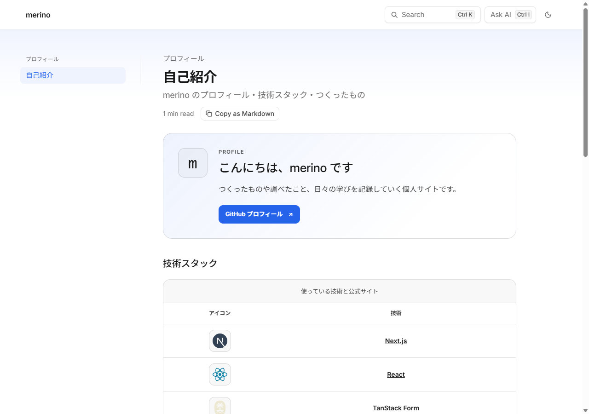
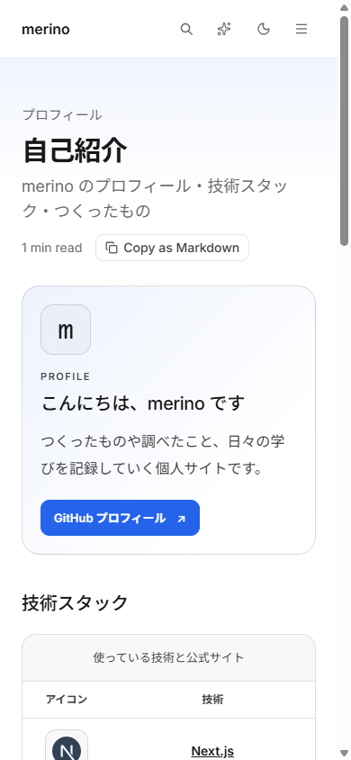
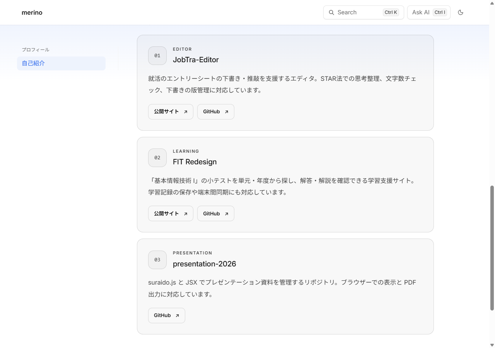

<!doctype html>
<html lang="ja">
<meta charset="utf-8">
<meta name="viewport" content="width=device-width,initial-scale=1">
<title>自己紹介 UI の基準</title>
<style>
body { margin: 0; font-family: var(--font-sans, system-ui, sans-serif); color: var(--foreground, #171717); }
details { margin-bottom: 16px; }
summary { cursor: pointer; padding: 10px 0; font-size: 14px; font-weight: 600; }
img { display: block; max-width: 100%; height: auto; border: 1px solid var(--border, #ddd); border-radius: var(--radius, 12px); box-sizing: border-box; }
.phone { width: 390px; }
</style>
<details open><summary>基準：デスクトップの自己紹介</summary></details>
<details><summary>基準：スマートフォンの自己紹介</summary></details>
<details><summary>基準：作品カード</summary></details>
</html>
